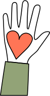

Bliv Frivillig
- Bliv en del af vores seje team -
Vildskud Festival er afhængig af, at der hvert år er en masse frivillige, der har lyst til at være med til at gøre festivalen til en god oplevelse for alle deltagende.
Alle frivillige får mulighed for at se forestillingerne gratis, får mad under deres vagter og muligheden for at møde en masse teaternørder.